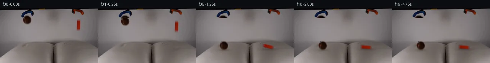
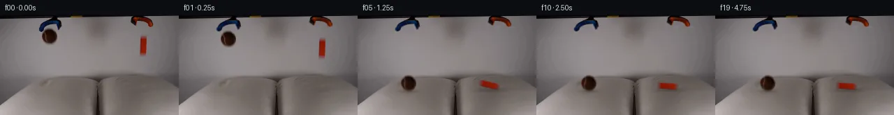
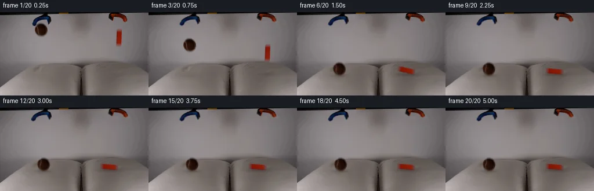
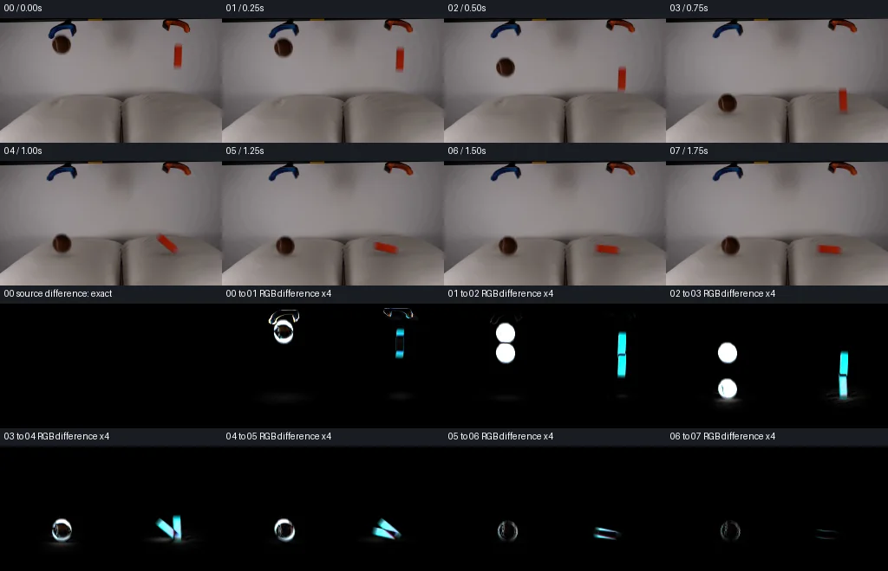

V0 · 初版
2026-11-04T18:59:48.446355+00:00 · RGB 10cbe8643942
![]()
Observable Generation Trace
把最终像素视频、Harness 冻结的每轮候选、真实工具事件和 Agent 自述放在同一页。可观测证据与模型自述分开标记，避免把“模型说它检查过”误当成真实工具调用。
![首帧]()
Static locked-off single-shot with fixed frame throughout filmed with constant framerate in real-time. The scene shows a realistic scientific demonstration. The scene only contains the described setup and actions. Two pillows are on a table and two grabber tools are positioned above them. The grabber tools release the brown tennis ball and the orange block.
首帧显示在左侧播放器初始画面。Track 权限、隔离和 tensor 一致性来自 run manifest，而不是 METHOD.md。
默认勾选初版和最终版；可选其他版本一起同步播放。仅检查图更新的连续重复快照已合并，回退旧视频仍保留为一次修订。
Observable events
来源：events.jsonl + run manifest
此 Track 禁止读取输出图片。逐轮预览由外部 Harness 自动冻结，只用于事后审计，生成 Agent 当时看不到这些页面。
Frozen candidates
每张图来自该 round 的真实 00 / 01 / 05 / 10 / 19 帧

pixels f2dff6fbc4048be1 · code 7e4dff6262a4027c
--- previous/generate.py
+++ current/generate.py
@@ -0,0 +1,280 @@
+"""PixelWorld-Text continuation, using only local input pixels and analytic motion.
+No image viewing, external models, engines, references, or network access.
+"""
+from pathlib import Path
+import json
+import math
+import numpy as np
+from PIL import Image, ImageDraw
+from scipy.ndimage import map_coordinates, gaussian_filter, maximum_filter
+from artifact_io import save
+
+ROOT = Path(__file__).resolve().parent
+SOURCE = np.asarray(Image.open(ROOT / 'first_frame.png').convert('RGB'), dtype=np.uint8)
+H, W = SOURCE.shape[:2]
+Y, X = np.mgrid[:H, :W].astype(np.float64)
+ORIG = SOURCE.astype(np.float64)
+
+
+def smooth_background(box, exclude):
+ """Fit the nearby neutral photographic backdrop, excluding colored objects."""
+ x0, y0, x1, y1 = box
+ region = (X >= x0) & (X < x1) & (Y >= y0) & (Y < y1)
+ neutral = (ORIG[..., 0] - ORIG[..., 1] < 15) & (ORIG[..., 2] - ORIG[..., 0] < 9)
+ neutral &= ORIG[..., 1] > 75
+ keep = region & neutral & ~exclude
+ xx = (X - (x0 + x1) / 2) / ((x1 - x0) / 2)
+ yy = (Y - (y0 + y1) / 2) / ((y1 - y0) / 2)
+ basis = np.stack([np.ones_like(X), xx, yy, xx*xx, xx*yy, yy*yy,
+ xx**3, xx*xx*yy, xx*yy*yy, yy**3], axis=-1)
+ coef = np.linalg.lstsq(basis[keep], ORIG[keep], rcond=None)[0]
+ result = np.clip(basis @ coef, 0, 255)
+ error = np.sqrt(np.mean((result[keep] - ORIG[keep]) ** 2))
+ return result, float(error)
+
+
+ball_zone = ((X - 70.5)/12.8)**2 + ((Y - 30.3)/13.2)**2 < 1
+ball_bg, ball_fit_error = smooth_background((46, 17, 95, 52), ball_zone)
+block_zone = (X >= 199) & (X <= 212) & (Y >= 27) & (Y <= 61)
+block_bg, block_fit_error = smooth_background((185, 21, 227, 68), block_zone)
+
+
+def extract_sprite(zone, background, inner=None, green=26):
+ """Estimate blurred edge coverage; unmix the original grey backdrop."""
+ contrast = background[..., 1] - ORIG[..., 1]
+ alpha = np.clip(contrast / np.maximum(background[..., 1] - green, 1), 0, 1)
+ alpha *= zone
+ alpha[contrast < 4] = 0
+ if inner is not None:
+ alpha[inner & (contrast > 55)] = 1
+ foreground = np.zeros_like(ORIG)
+ valid = alpha > 0
+ foreground[valid] = (ORIG[valid] - background[valid]*(1-alpha[valid, None])) / alpha[valid, None]
+ foreground = np.clip(foreground, 0, 255)
+ premult = foreground * alpha[..., None]
+ # A one-pixel soft reconstruction collar removes the photographed blur.
+ erase = gaussian_filter(maximum_filter((alpha > 0.025).astype(float), size=3), .48)
+ erase = np.clip(erase, 0, 1)
+ return alpha, premult, erase
+
+ball_inner = ((X-70.5)/10)**2 + ((Y-30.3)/10.5)**2 < .48
+ball_a, ball_p, ball_erase = extract_sprite(ball_zone, ball_bg, ball_inner, green=27)
+block_inner = (X >= 202) & (X <= 208) & (Y >= 34) & (Y <= 53)
+block_a, block_p, block_erase = extract_sprite(block_zone, block_bg, block_inner, green=27)
+
+# Preserve the support and the proximal tool parts; only their lower jaws open.
+def tool_layer(x0, x1, y0, y1, center):
+ bg = ORIG.copy()
+ for yy in range(y0, y1):
+ left = np.median(ORIG[yy, x0-5:x0-1], axis=0)
+ right = np.median(ORIG[yy, x1+1:x1+5], axis=0)
+ weights = np.arange(x1-x0)[:, None] / max(1, x1-x0-1)
+ bg[yy, x0:x1] = left*(1-weights) + right*weights
+ zone = (X >= x0) & (X < x1) & (Y >= y0) & (Y < y1)
+ contrast = np.max(np.abs(ORIG-bg), axis=-1)
+ a = np.clip((contrast-2)/35, 0, 1) * zone
+ # The uppermost row does not move and forms a continuous connection.
+ a[Y == y0] *= .4
+ fg = np.zeros_like(ORIG)
+ valid = a > 0
+ fg[valid] = (ORIG[valid]-bg[valid]*(1-a[valid,None]))/a[valid,None]
+ fg = np.clip(fg, 0, 255)
+ return dict(a=a, p=fg*a[...,None], bg=bg, center=center, y0=y0, y1=y1)
+
+left_tool = tool_layer(55, 88, 7, 26, 71.5)
+right_tool = tool_layer(186, 224, 5, 20, 204)
+
+BASE = ORIG.copy()
… diff truncated; 193 more lines …
pixels b7c5a7000356d2be · code 1cd0fada6d47c5bd
--- previous/generate.py
+++ current/generate.py
@@ -34,6 +34,8 @@
ball_zone = ((X - 70.5)/12.8)**2 + ((Y - 30.3)/13.2)**2 < 1
+blue_pixels = ORIG[..., 2] > ORIG[..., 0] + 8
+ball_zone &= ~blue_pixels
ball_bg, ball_fit_error = smooth_background((46, 17, 95, 52), ball_zone)
block_zone = (X >= 199) & (X <= 212) & (Y >= 27) & (Y <= 61)
block_bg, block_fit_error = smooth_background((185, 21, 227, 68), block_zone)
@@ -71,6 +73,8 @@
weights = np.arange(x1-x0)[:, None] / max(1, x1-x0-1)
bg[yy, x0:x1] = left*(1-weights) + right*weights
zone = (X >= x0) & (X < x1) & (Y >= y0) & (Y < y1)
+ if center < 100:
+ zone &= ~ball_zone
contrast = np.max(np.abs(ORIG-bg), axis=-1)
a = np.clip((contrast-2)/35, 0, 1) * zone
# The uppermost row does not move and forms a continuous connection.
@@ -172,7 +176,8 @@
dent = .9+2.0*math.exp(-((dt-.07)/.09)**2)
if t >= 2.25:
angle, dent = -math.radians(87), .9
- pivot = np.array([BLOCK_PIVOT[0] + .55*(1-math.exp(-dt/.5)), BLOCK_FLOOR+dent])
+ pivot_shift = .55 if t >= 2.25 else .55*(1-math.exp(-dt/.5))
+ pivot = np.array([BLOCK_PIVOT[0] + pivot_shift, BLOCK_FLOOR+dent])
c,s = math.cos(angle), math.sin(angle)
rot = np.array([[c,-s],[s,c]])
center = pivot + rot @ (BLOCK_CENTER-BLOCK_PIVOT)
@@ -222,7 +227,7 @@
frame = contact_shadow(frame, bx+1, BALL_FLOOR+bd+.8, 8.5, 2.0, bh, .29)
flatness = abs(math.sin(ba))
frame = contact_shadow(frame, bc[0], BLOCK_FLOOR+cd+.3, 4.7+8*flatness, 1.55+flatness*.6, ch, .28)
- opening = 1-math.exp(-t/.10)
+ opening = 1. if t >= 1.5 else 1-math.exp(-t/.10)
frame = open_tool(frame, left_tool, opening, .16, .8)
frame = open_tool(frame, right_tool, opening, .12, .65)
frame, _ = composite_sprite(frame, block_a, block_p, BLOCK_CENTER, bc, ba)pixels b7c5a7000356d2be · code 1cd0fada6d47c5bd
No generate.py text change in this frozen round.
Final visual checks
Harness 保存的最终产物


Agent claims
以下文字由生成 Agent 撰写，不等同于工具证据
Only prompt.txt and first_frame.png were used as scene inputs. The PNG was examined with local Pillow/NumPy code: RGB samples, luminance and color-class text grids, and row/column gradients. No image Read/View tool or visual review was used.
The source is 256 × 144 RGB. Its maximum channel values are (193,183,182), so this is a dim, realistically lit scene. A smooth grey/pink backdrop occupies most of the frame; a dark horizontal support is cropped at the top. Two beige/taupe pillows fill the lower area, with rear contours around y=89 on the left and y=86 on the right and a dark central separation around x=134–141. They extend past the bottom crop. The fixed table/setup and background will be retained from the input.
The left blue/dark grabber occupies approximately x=56–87, y=0–24, with two jaws ending near (59,22) and (82,19). A dark brown tennis ball is centered around (70.5,30.0), radius approximately 10 pixels, with the soft photographic boundary reaching x=60–81, y=19–42. Measured ball RGB examples include (52,23,10) at (67,31), (38,18,7) at (70,31), and (24,9,1) at (76,28). Preserve the original texture and lighting rather than introducing a bright replacement ball.
The right rust/dark grabber occupies approximately x=187–222, y=0–18; its opening faces down. The orange block occupies x=200–210, y=29–58, centered around (205,43.5). It has a long vertical rectangular projection, softly blurred boundaries, and RGB near (138,26,2) in its lower central face. The first frame already shows a small gap below the right tool, so continuation starts with opening jaws and falling objects, without adding a hold phase. The block's narrow projected profile and source face texture will be preserved as it drops and tips.
Assumed contact points on the pillow top surfaces are around (71,108) and (205,106). These lie within the original pillow region, below its rear boundary. Gravity is represented in image coordinates at about 330 pixels/s². Both objects release at the same time, shortly after frame 00; the lower block touches first. The soft pillows absorb energy, with a brief local depression and a modest ball rebound. The block tips left, coming to rest almost horizontal on the right pillow. No additional objects, people, cuts, camera movement, or scene-wide light changes will be introduced.
| Frame | Time (s) | Planned event |
|---|---|---|
| 00 | 0.00 | Exact original RGB image, tools and objects in original positions. |
| 01 | 0.25 | Jaws open slightly; ball and block descend about 3–4 px. |
| 02 | 0.50 | Open tools stay above; accelerating descent about 24 px. |
| 03 | 0.75 | Block contacts and depresses the right pillow; ball reaches the left pillow. |
| 04 | 1.00 | Ball makes a low rebound; block begins tipping left around its lower end. |
| 05 | 1.25 | Ball returns to soft contact; block continues tipping, losing energy. |
| 06 | 1.50 | Ball rolls a few pixels across the local cushion slope; block nearly horizontal. |
| 07 | 1.75 | Block reaches a stable side-resting pose; shallow pillow dents relax. |
| 08 | 2.00 | Ball slows; small residual pillow settling. |
| 09 | 2.25 | Both objects approach rest. |
| 10 | 2.50 | Minute residual ball settling. |
| 11 | 2.75 | Objects settled on their respective pillows. |
| 12 | 3.00 | Hold fixed scene and resting objects. |
| 13 | 3.25 | Hold fixed scene and resting objects. |
| 14 | 3.50 | Hold fixed scene and resting objects. |
| 15 | 3.75 | Hold fixed scene and resting objects. |
| 16 | 4.00 | Hold fixed scene and resting objects. |
| 17 | 4.25 | Hold fixed scene and resting objects. |
| 18 | 4.50 | Hold fixed scene and resting objects. |
| 19 | 4.75 | Final settled state; 20 frames displayed at 4 fps span 5 seconds. |
Implementation plan: derive small object mattes by comparing their RGB against a locally fitted smooth backdrop; reconstruct their vacated backdrop from nearby input pixels; move the original object pixels with affine transforms; open original grabber-jaw pixels with a small continuous warp; apply analytic gravity, damped soft contact, local pillow warps, and subtle contact shadows. Use local numerical checks for silhouettes, trajectories, tensor/PNG agreement, first-frame identity, and fixed background. Produce contact sheets for the user without claiming to have visually inspected them.
This is a local pixel-based animation built from first_frame.png. The source was inspected numerically with Pillow and NumPy, using RGB values, luminance text grids, saturation-class text grids, and gradient measurements. No image Read/View tool was used, and no visual review is claimed. No network, external references, masks, AI models, physics engines, rendering engines, or subagents were used.
OBSERVATION.md was written before generate.py, recording measurements, the intended motion, and all 20 frame events. generate.py preserves frame 00 directly from the input RGB array. For subsequent frames it retains the original photographic setup and moves only the released objects, lower grabber jaws, and small local cushion regions.
The ball and block are extracted from their source locations by estimating edge opacity from their green-channel contrast against nearby grey background. The ball matte explicitly excludes blue grabber pixels. Original RGB texture is separated from the grey boundary by alpha unmixing, then transformed as premultiplied RGB with bilinear interpolation. The vacated backdrop is reconstructed with a cubic polynomial fitted to nearby neutral source pixels. The left ball area's fit has about 2.17 RGB levels RMS error; the block area's fit has about 0.90. The source ball's dim brown appearance and the block's orange face and narrow profile are retained.
The original lower tool pixels are separated with a local row-wise background estimate. Their jaws open through a smooth horizontal expansion of up to roughly two pixels at each tip, with a slight upward displacement. Their proximal portions and the cropped support stay fixed. The initial render's numerical color bounds revealed that the left tool mask included the ball's upper edge; the final code excludes the ball from that layer. The final tool opening and object poses are fixed explicitly to eliminate residual subpixel drift during the hold.
Motion uses image-coordinate gravity of 330 pixels/s², with simultaneous release at 0.10 s. The ball's first contact is at approximately 0.737 s; the lower block contacts at approximately 0.643 s. At the 0.25 s sample both objects have descended 3.71 pixels, and at 0.50 s they have descended 26.40 pixels. The ball compresses briefly into the soft cushion, makes a low rebound, rolls 4.1 pixels, and settles. The block tips left about its lower corner through an analytic damped progression to 87 degrees from its original upright pose. It rests on the right pillow near (187.5,101.7). This is a manually chosen projected motion model, rather than a full three-dimensional simulation.
Pillow response uses small Gaussian displacement fields applied to the original fabric pixels, with local shading and subtle contact shadows. Peak modeled dents are about three pixels and decay to less than one pixel under the settled objects. Existing fabric detail and the scene's subdued lighting supply the appearance; no new pillow, object, text, or camera motion is drawn inside the scene. Fine details near extracted boundaries and repaired backgrounds are approximations of the source pixels.
The output is 20 RGB frames, each 256 × 144, displayed at 4 fps for five seconds. Frame sample times are 0.00–4.75 s, with each image held for 0.25 s. pixels.npz contains a uint32 array named pixels with shape (144,256,20), encoded as 0xRRGGBB. Every frames/00.png–19.png was decoded and compared exactly against both this tensor and the generated RGB array. Frame 00 equals the decoded first_frame.png RGB values exactly. The checked far-backdrop and top-support regions remain byte-for-byte identical. Frames 11–19 form an identical final hold. validation.json records these checks and per-frame difference statistics; trajectory.json records motion parameters and sample positions.
inspection.png contains eight selected frames. transition_check.png contains consecutive frames 00–07 and their amplified RGB difference panels. These sheets were generated for human inspection but were not opened with an image tool. index.html is a standalone player with embedded lossless first-frame data and delta packets, replay, looping, and seeking at 4 fps. The embedded player packets were independently decoded and verified against all 20 tensor frames.
Run python generate.py from this workspace to regenerate the outputs. It needs Python, NumPy, Pillow, and SciPy and uses the supplied artifact_io.py output helper and player_template.html. All generated artifacts are local to this workspace.